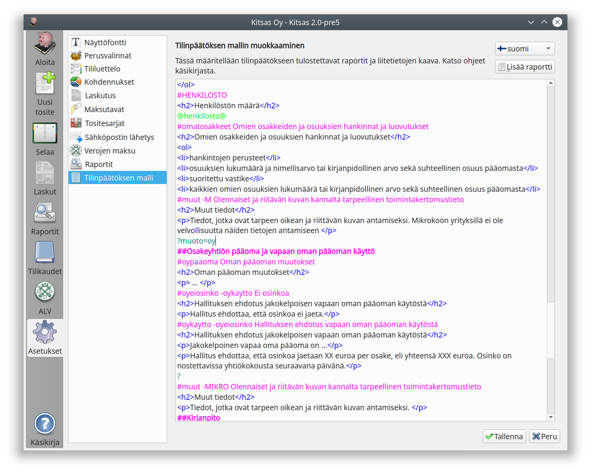

Päivitä Kitsas uudempaan versioon!
Suosittelemme kaikille käyttäjien Kitsaan päivittämistä uudempaan versioon.
Uusi versio on ladattavissa maksutta ohjelman kotisivulta kitsas.fi
Älä lue näitä ohjeita!
Nämä ohjeet ovat Kitsaaan versioille 2.0 – 2.3, joita ei enää tueta
Ohjeet Kitsaan uudemmilla versiolle löytyvät osoitteesta kitsas.fi
Tilinpäätöksen malli¶
Edistynyt toiminto
Sinun ei yleensä tarvitse muokata tilinpäätöksen mallia.
Tilikarttojen päivitykset
Tilikartan päivitykset tekevät muutoksia myös tilinpäätöksen malliin. Jos päivität myöhemmin tilikartan, saatat joutua tekemään muutokset uudelleen.

Tässä määritellään tilinpäätökseen tulostuvat raportit sekä liitetietojen kaava.
Erikoismerkeillä alkavat värilliset rivit määrittelevät ehtoja ja tulosteita, ja kaikki muu html-muotoinen teksti tulostuu tilinpäätöksen liitetietoihin.
?-alkuiset rivit määrittelevät, että niiden jälkeen tulostuu vain tietyllä asetuksella aina seuraavaan ?-ehtoon saakka (Pelkkä ? lopettaa ehdon). Niinpä seuraavan esimerkin osuus on käytettävissä vain osakeyhtiöille
?muoto=oy
##Osakeyhtiön pääoma ja vapaan oman pääoman käyttö
#oypaaoma Oman pääoman muutokset
<h2>Oman pääoman muutokset</h2>
<p> ... </p>
#oyeiosinko -oykaytto Ei osinkoa
<h2>Hallituksen ehdotus jakokelpoisen vapaan oman pääoman käytöstä</h2>
<p>Hallitus ehdottaa, että osinkoa ei jaeta.</p>
#oykaytto -oyeiosinko Hallituksen ehdotus vapaan oman pääoman käytöstä
<h2>Hallituksen ehdotus jakokelpoisen vapaan oman pääoman käytöstä</h2>
<p>Jakokelpoinen vapaa oma pääoma on ...</p>
<p>Hallitus ehdottaa, että osinkoa jaetaan XX euroa per osake, eli yhteensä XXX euroa. Osinko on nostettavissa yhtiökokousta seuraavana päivänä.</p>
?
Seuraavat rivit määrittelevät, että niiden jälkeen tulostuu vain tietyn kokoluokan yrityksille
- #MIKRO Mikroyrityksille
- #PIEN Pienyrityksille
- #ISO Yrityksille, jotka eivät ole mikro- eivätkä pienyrityksiä
- #HENKILOSTO Yrityksille, joilla on henkilöstöä
## tarkoittaa, että rivi on tilinpäätöksen muodostamisen valintaikkunaan tulostuva otsikko
##Tuloslaskelma
#brutto -I -mikrolv -mikrobrutto Bruttotuloslaskelma (PMA-asetuksen mukainen)
@Tuloslaskelma PMA bruttotulos!TULOSLASKELMA (TILINPÄÄTÖS)@
#mikrolv -I -P -brutto -mikrobrutto Mikroyrityksen lyhyt tuloslaskelma (PMA-asetuksen mukainen)
@Tuloslaskelma mikroyritys!TULOSLASKELMA (TILINPÄÄTÖS)@
#mikrobrutto -I -P -brutto -mikrolv Mikroyrityksen lyhyt bruttotuloslaskelma (PMA-asetuksen mukainen)
@Tuloslaskelma mikro bruttotulos!TULOSLASKELMA (TILINPÄÄTÖS)@
#-brutto -mikrobrutto -mikrolv
@Tuloslaskelma!TULOSLASKELMA (TILINPÄÄTÖS)@
#
<h2>Tilinpäätöksen laatimisperusteet</h2>
#MIKRO
<p>Tilinpäätöksen laatimisessa on noudatettu pien- ja mikroyrityksen tilinpäätöksessä esitettävistä tiedoista
annetun asetuksen (PMA) mikroyrityssäänöstöä.</p>
#PIEN
<p>Tilinpäätöksen laatimisessa on noudatettu pien- ja mikroyrityksen tilinpäätöksessä esitettävistä tiedoista
annetun asetuksen (PMA) pienyrityssäänöstöä.</p>
#-alkuiset rivit määrittelevät tulostusehtoja. Ne ovat muotoa
#nimi -pois -P Valintaikkunaan tulostuva teksti
nimion valinnan tunnuspoison sellaisen valinnan tunnus, joka ei voi olla samanaikaisesti valittuna-Ptarkoittaa, ettei tätä valintaa edes näytetä pienyrityksille (vastaavasti-Mei näytetä mikroyrityksille eikä-Ipienyritystä isommille yrityksille)- Loppurivillä on valintaikkunaan tulostuvaa tekstiä
Rivi voi olla myös ilman tulostuvaa tekstiä, jos valinnan tunnus on määritelty jo aiemmin. Jos rivillä on pelkästään --merkillä alkavia poissulkevia tunnuksia, tulee rivi valituksi, ellei yksikään mainittu tunnus ole valittu.
Pelkkä # lopettaa ehdon, ja sen jälkeen rivit tulostuvat jälleen kaikilla valinnoilla.
@-alkuiset rivit määrittelevät erityisen tulostettavan
@Raportin nimi:Valinnat!Otsikko@määrittelee, että mainittu raportti liitetään tilinpäätökseen, (nämä voi liittää helpommin Lisää raportti-napilla). Mahdollisia valintoja ovat Tunnus | Valinta --------|----------- E | Tilikohtaiset erittelyt K | Erittely kustannuspaikoittain P | Erittely projekteittain B | Budjettivertailu@henkilosto@lisää taulukon henkilöstön määrästä tällä ja edellisellä tilikaudella
#HENKILOSTO
<h2>Henkilöstön määrä</h2>
@henkilosto@
DevTool
Tilikartan kaikkiin asetuksiin pääsee käsiksi DevTool-työkalulla, joka käynnistyy painamalla Ctrl+D. Käytä työkalua vain todelliseen tarpeeseen!